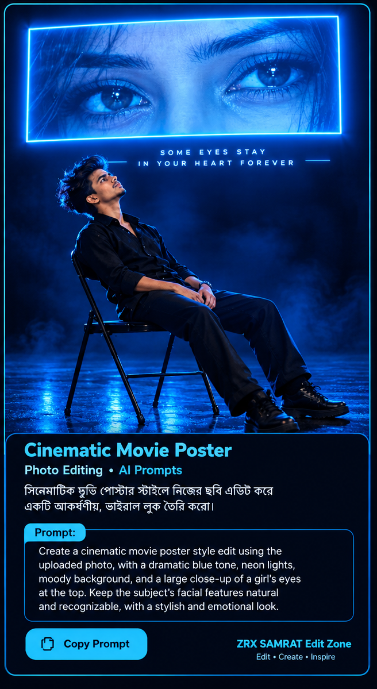

Cinematic Movie Poster
নিজের ছবিকে নীল আলো ও সিনেমার পোস্টারের মতো dramatic লুকে সাজাও।
Example Image

AI Photo Editing Prompt
Create a dramatic cinematic movie poster using the uploaded person's photo. Place the subject in a dark, atmospheric setting with deep blue and teal lighting, soft glowing highlights, realistic shadows, subtle haze, and a premium film-poster composition. Add a large, expressive close-up of a woman's eyes across the upper part of the poster, with the main subject positioned below. Blend both elements artistically with smooth transitions, detailed textures, realistic photography, and professional color grading. Preserve the uploaded person's recognizable facial features. Do not add unwanted text or watermarks.
Copy Prompt
← Back to Home